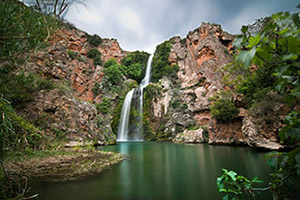

Salto de Chella es el paraje más emblemático de todo el término, cada vez que alguien hace referencia a Chella no puede evitar hablar de la espectacular cascada de 25 metros de altura localizada en el cauce del río Sellent a su paso por la localidad. Si bien su belleza es el principal atractivo de este paraje, no se puede obviar los encantos que encierra los alrededores como las ruinas de la central electrica